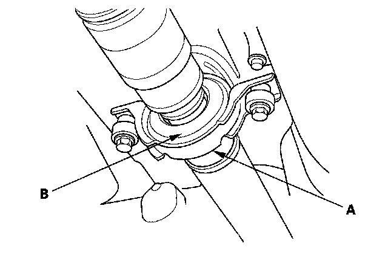
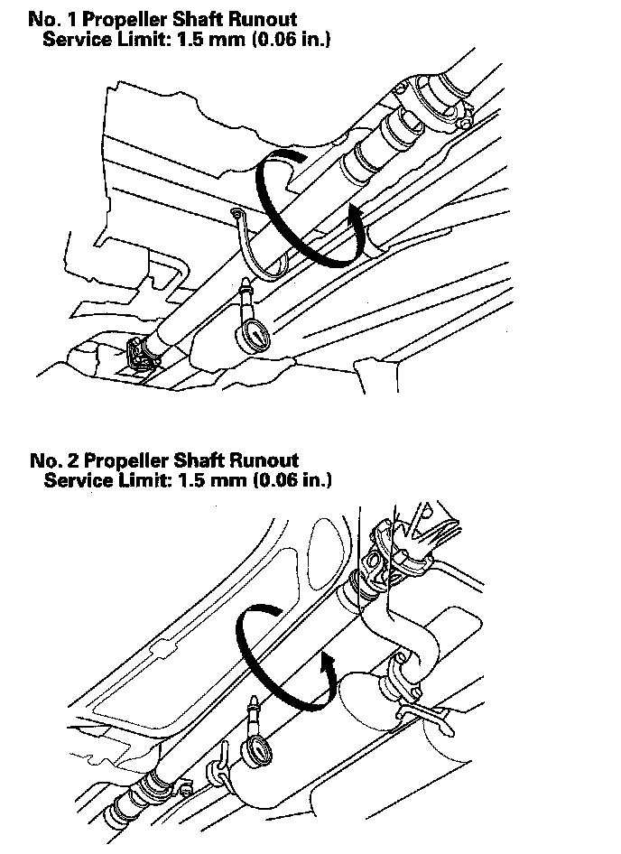

Drive/Propeller Shaft: Testing and Inspection
Propeller Shaft InspectionUniversal Joint and Boots
1. Shift the transmission to the N position.
2. Raise the vehicle on a lift.
3. Check the center support bearing (A) for excessive play or rattle. If the center support has excessive play or rattle, replace the propeller shaft assembly.

4. Check the rubber portion of the mount (B) for damage and deterioration. If the rubber portion is damaged or deteriorated, replace the propeller shaft assembly.
5. Check the universal joints for excessive play or rattle. If the universal joints have excessive play or rattle, replace the propeller shaft assembly.
Propeller Shaft Runout
6. Install a dial indicator with its needle on the center of No. 1 propeller shaft or No. 2 propeller shaft.
7. Turn the other propeller shaft slowly and check the runout. Repeat this procedure for the other propeller shaft.

8. If the runout on either propeller shaft exceeds the service limit, replace the propeller shaft assembly.